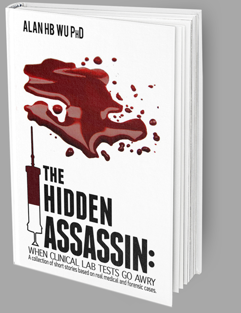

THE HIDDEN ASSASSIN
When clinical lab tests go awry
The Hidden Assassin. When Clinical Lab Tests Go Awry contains stories that involve testing from the general clinical laboratory, not just toxicology. Find out what happens to a healthy woman when she finds out she is very likely to get breast cancer, how a blood test catches a terrorist, or how a modern lab test if it were available in 1968 for Hubert Humphrey could have changed the course of American history.
BUY IT NOW
Available From

CHAPTER SUMMARIES
THE HIDDEN ASSASSIN is a collection of short stories based on real medical and forensic cases. Below you'll find brief summaries explaining each story.
-
Clinical Lab Test Gone Awry
A diabetic woman develops pelvic inflammatory disease and undergoes surgery to remove adhesions around her small bowel. While in the recovery room, her blood glucose levels are regulated to within tight limits by insulin. Glucose testing is performed at bedside, but an interferrent in her blood produces an erroneous result by the device.
-
Absence of Malice
A grandmother spends a quiet day with her grandchildren. She is experiencing chest pain but doesn't tell her son until later. When he finds out, she is sent to the ER, where doctors order tests from my lab to see if she had a heart attack. The test for troponin comes out marginally positive but she is inappropriately sent home.
-
Fatal Dedication
A young woman donates her life savings to join a religious cult. A few years later, she becomes ill while living under their care. The cult does not believe in drugs and withholds treatment until just prior to her death. The District Attorney accuses the cult of medical negligence based on a single abnormal test result from the autopsy.
-
Tree Trunks
An obese woman undergoes a magnetic resonance imaging test because of a blood clot. A blood test is performed to determine if she is eligible for the dye used in the procedure to visualize her blood vessels. The test is performed by an inexperienced doctor on a device that was not functioning. The botched result leads to untoward consequences for the woman.
-
Taking Its Toll
A pregnant woman works two jobs as a cashier and toll booth ticket taker. She is exposed daily to chemicals present in the thermal paper used for receipts. This results in birth defects when her child is born. In utero exposure to these toxins may have also permanently altered his personality which is evident as he grows up.
-
The Phantom Pregnancy
A couple tried unsuccessfully for years to conceive. When she finally becomes pregnant, the couple is overjoyed; but the happiness is short-lived. Instead of being pregnant, the obstetrician tells the woman that she has a life-threatening tumor and is treated a total hysterectomy and chemotherapy. But a mistake was made.
-
In God's Hands
An older pregnant woman undergoes prenatal care including hCG testing, a pregnancy-associated hormone. When the levels decline unexpectedly, her doctor concluded that the fetus will be non-viable and recommends a chemical abortion. The abortion procedure is initiated but the fetus remains viable.
-
Missing Lights
A hotel maid is raped while at work by a famous hotel guest. So she decides to have the baby. During the prenatal period, all laboratory tests appeared normal and she is promised to have a healthy child. The woman develops early contractions and delivers a premature infant. The child is sent home with the mother too soon.
-
Veteran Stones
A civil war veteran returns to his farm after the war. Years later, he suddenly develops abdominal cramps, dies from the illness, and is buried on his farm. One hundred fifty years later, a real estate developer makes an offer for the land to the veteran's descendants requiring a relocation of the veteran's remains. His cause of death is finally discovered.
-
Explosive Blood
A foreign student gets a chemistry degree in the US but is unable to find a job, so he works for his father's rug import business. During a soccer game, he passes out and is sent to the ER, and is diagnosed with methemoglobinemia, a condition that reduces oxygen delivery to his body. As drugs and chemicals can cause this, we found something in his blood that has national security implications.
-
A Fib about Afib
A real estate agent is diagnosed with atrial fibrillation, an irregular heartbeat. She is put on a blood thinner to prevent a stroke and a heart attack. She suffers bleeding from the brain due to an overdose of the drug within the first few weeks of dosage. Her doctors were unaware of a lab test that could have optimized her drug dosage to avoid the stroke.
-
Less-phine
A pharmaceutical sales representative is the driver of a fatal pedestrian-car accident. He was tried and convicted of involuntary manslaughter due to his self-prescribed use of codeine. My laboratory underwent an investigation involving his genetics, and proved that he was in full control of his faculties.
-
Ibuprofen Preemption
A college student takes ibuprofen for muscle aches after a sorority retreat. She suffers adverse reactions resulting in liver and kidney disease. We determine she had a genetic predisposition that caused this reaction. The family sues the pharmaceutical company who produced a generic version of the drug. Is the secondary drug company libel for not providing a warning to consumers? This case reaches the US Supreme Court.
-
Bottom Up
Pharmacy students are offered a genetic testing as part of their class on genetic predisposition towards drugs. The test results for one student could influence the treatment of her father who suffers a heart attack. He is given a standard prescription of an anti-clotting drug instead of a higher dose that might have been better in protecting him against another attack.
-
Moyamoya
A Japanese-American boy has a congenital defect in his brain which caused his blood vessels to be unusually thin. After a long day of skiing with his friends, he returns to the chalet and collapses. Earlier in the day one of his friends gave him a drug that was synthesized in a garage laboratory from an internet recipe. What did he take and why did it cause a problem for him?
-
Breast Report
A young woman's mother develops breast cancer and has a mastectomy. Fearing that she is also at risk, the daughter has her DNA tested for genetic variances. The test is performed and results are reported electronically to the doctor. The girl sees the result through the internet first, because the oncologist is on vacation. There is no opportunity for the doctor to discuss the significance of the findings.
-
Hair Today, Gone Tomorrow
A mother pushes her daughter to compete in beauty contests. Just before an important pageant, the teenage girl arrives at a beauty salon to add some highlights to her hair. The stylist is distracted while working on the young girl's hair. Chemicals used to dye her hair are left on the girl's head too long.
-
Mr. Potato Head
A man has a fetish with eating potatoes. His obsession began in childhood, but now as an introverted adult, his diet consists almost exclusively of raw green tubers. Then his health begins to decline as a result. His doctor contacted me to see if there are toxins in his blood from the potatoes that could cause his current illness.
-
Purple Reign
King George III ruled England during the Revolutionary War. Centuries later, medical scientists conclude that he may have been psychotic because of porphyria, a genetic disease that affects hemoglobin production and produces bluish-purple urine. I re-write history making lab tests and treatments available to treat the King for porphyria when the colonists were revolting.
-
Bladder Control
Hubert Humphrey barely lost to Nixon in the 1968 presidential election because he didn't distance himself from President Johnson's Viet Nam war policies. One year earlier, Humphrey was hospitalized for having bloody urine but there was no cause found. Ten years later, he dies of bladder cancer. In 1994, scientists re-examined his biopsy with new tests and determine that confirmed the cancer. I re-write history making this test and diagnosis available in 1968.
-
Fat Rescue
A patient undergoes an elective surgery and is given standard anesthesia. The operation is stopped because she develops a seizure during the procedure. She is treated with a fat emulsion that was recently discovered to be useful in drug overdoses, and she is saved. We perform a research study to determine how this miracle substance works.